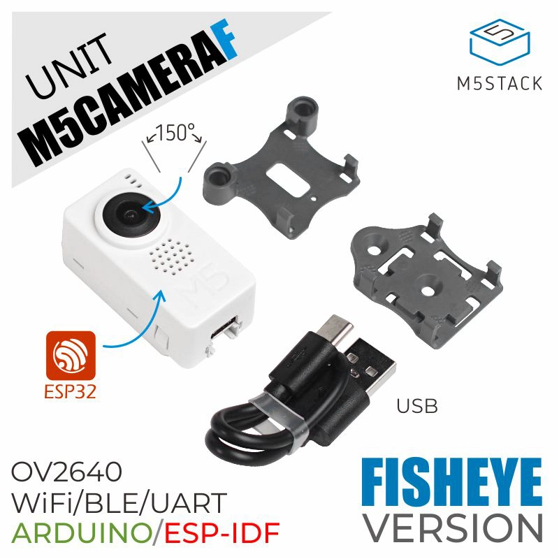

Guide · ESPHome
ESP32-CAM with Home Assistant: setup, limits, and picks
A $10-ish ESP32-CAM board is the cheapest way to put a camera into Home Assistant, and the ESPHome esp32_camera component makes it a first-class camera entity on your dashboard — no cloud, no MQTT broker, no vendor account. The catch is honesty about what the hardware is: a 2-megapixel sensor on a microcontroller that streams compressed JPEG frames over Wi-Fi. For checking whether the shed is closed, whether the 3D printer is still printing, or whether a package is on the porch, it is genuinely useful. For recording evidence overnight, it is the wrong tool. This guide walks through the setup, the real limits per the official documentation, which boards to pick, and when to step up to Frigate with a proper IP camera.
How the ESP32-CAM reaches Home Assistant
The path is entirely local. You flash the board with ESPHome, and the esp32_camera component exposes the camera to Home Assistant over the native ESPHome API. Home Assistant shows it as a camera entity, with snapshots and a stream available from the UI. Per the ESPHome documentation, two things must be configured on the board for the component to work: I2C (the camera is an I2C device for control purposes) and PSRAM, the extra external RAM these boards carry. JPEG image compression specifically requires the psram component to be enabled in your configuration. No MQTT broker is involved anywhere in this path, which keeps the whole thing inside your network.
Setting it up
- Pick a supported board. The ESPHome documentation ships example configurations for the Ai-Thinker Camera, M5Stack Camera, M5Stack Timer Camera X/F, M5Stack M5CameraF New, and M5Stack AtomS3R-CAM. Starting from one of these examples is far easier than deriving a pin map yourself.
- In the ESPHome YAML, enable
psramandi2c, then add theesp32_camerablock with the example's pin definitions. The defaults — 640x480 at 10 fps — are the right starting point. - Flash the board over USB or, after the first flash, over the network. ESPHome shows it in the dashboard.
- Home Assistant adopts the device over the native API; the camera entity appears alongside any sensors or switches on the same board.
- Add the camera to a dashboard card, or wire it into an automation that takes a snapshot when a door contact opens.
One configuration detail that bites people: the camera occupies PWM timer #1 on the ESP32. If you have other LEDC PWM outputs on the same board — a status LED, a buzzer — the documentation says those need to use channel 2 onward. If you use GPIO16 as a button input on an Ai-Thinker board, expect watchdog resets; on that board, GPIO16 is wired to the onboard PSRAM, and touching it confuses the RAM the camera depends on.
What the camera can actually do
Per the esp32_camera component documentation, an ESP32 camera board offers resolutions up to 2560x1920 (QSXGA) depending on the sensor, with 640x480 (VGA) as the default. The default frame rate is 10 fps, with an idle frame rate of just 0.1 fps so the board cools down and saves power when nobody is watching. You can push max_framerate up to 60 fps, but the documentation is blunt that this is only achievable "with reduced frame sizes" and warns of overheating. Frame buffers default to 1 (configurable 1-2), drawn from PSRAM. JPEG quality runs on a scale from 6 (best) to 63 (worst), with 10 as the default.
Read as a whole, that spec sheet describes a camera that wakes up, serves a frame or a short stream, and goes back to sleep. That is exactly right for a peek-at-the-shed or a printer-cam. It is not a 24/7 security camera, and treating it as one ends in thermal throttling and dropped frames.
Which board to buy
All of these are ESP32-family boards with a camera sensor, and all have published ESPHome example configurations. No board below ships firmware worth keeping; flash ESPHome from the start.
- Ai-Thinker ESP32-CAM — the budget classic. ESP32-S with an OV2640 2-megapixel sensor and a microSD slot. The pin config is in the ESPHome docs. Mind GPIO16 (it is wired to the onboard PSRAM) and give it a 5 V supply that can actually deliver, because brownouts cause boot loops many people misdiagnose as flash failures. Ai-Thinker ESP32-CAM on Amazon
- M5Stack M5Camera-F New (SKU U037) — a neater package: OV2640 2 MP sensor behind a 150-degree fisheye lens, 4 MB flash plus 4 MB PSRAM. Per M5Stack's product documentation, the factory firmware streams roughly 5-6 fps at 600x800 over its own Wi-Fi access point; under ESPHome you control resolution and frame rate yourself. M5Stack M5Camera-F on Amazon

- M5Stack AtomS3R-CAM (SKU C126-CAM) — the smallest of the lot at 24x24x13.5 mm. It runs an ESP32-S3-PICO-1-N8R8 with 8 MB flash and 8 MB PSRAM, carries a 0.3-megapixel GC0308 sensor with IR transmission control, and ships with driver-free UVC factory firmware. If you want a discrete peek camera inside an enclosure, this is the one; it is also the example board in the ESPHome docs. M5Stack AtomS3R-CAM on Amazon

- M5Stack Timer Camera X/F — an OV2640 variant built to be battery-ready, with an ESPHome example config in the docs.
- TTGO T-Camera (V05/V162/V17) and T-Journal — ESPHome example configs published; handy if you want a display or buttons on the same board.
- ESP-EYE — Espressif's own devkit, with an ESPHome example config. The safest choice if you want the reference hardware.
A note on heat: the M5Stack documentation for its camera boards notes insufficient cooling and overheating in continuous operation. That matches the ESPHome warning about high frame rates. Mount these boards where air moves, and let the idle frame rate do its job.
ESPHome camera or Frigate?
These two answers overlap in search results but solve different problems. ESPHome's camera component streams MJPEG frames to Home Assistant and gives you a live entity. It does not detect anything, and it does not record. Frigate is the reverse: a full NVR with object detection, recording, and an official Home Assistant integration installed via HACS. If your real question is "did a person walk up the driveway at 3 a.m.," Frigate is the tool.
Frigate has its own hardware expectations, and it is worth reading them before buying anything. Per the Frigate hardware documentation, cameras should output H.264 with AAC audio, ideally with multiple substreams; Wi-Fi cameras are explicitly "not recommended" because of unreliable streams and lost video data; and for Reolink it suggests sticking to 5 MP and lower. Detection accelerators with first-party support include Hailo8/Hailo8L, Google Coral EdgeTPU (USB or M.2), MemryX MX3, OpenVINO on Intel, Nvidia GPUs, Apple Silicon, and AMD ROCm, with Jetson and Rockchip community-supported. The server itself can be any Intel CPU with AVX/AVX2 that runs Debian; even a small N100 mini PC qualifies, which is why compact machines like the ones in our mini PC for Home Assistant guide keep coming up in Frigate builds.
The integration itself is straightforward if your networking is already sane: the MQTT integration must be configured in Home Assistant first, Frigate must have MQTT enabled and point at the same MQTT server, the media_source component must be enabled for the Media Browser, and the integration URL points at Frigate's unauthenticated port 5000 or authenticated port 8971.
Where does the ESP32-CAM fit then? Two honest uses. First, it is a cheap second glance at places a proper camera does not need to go — inside a printer enclosure, on a shelf, at a chicken coop. Second, it is the on-ramp to the whole ESPHome ecosystem; most people who flash one camera end up flashing sensors for the rest of the house. If your goal ends at "Frigate with real detection," buy a wired IP camera with an RTSP H.264 stream instead and skip the ESP32-CAM entirely. A restream through go2rtc can bridge odd sources, but the Frigate documentation's warning about Wi-Fi streams stands regardless of the brand.
Gotchas worth knowing before you flash
- GPIO16 on Ai-Thinker boards is wired to the onboard PSRAM. Using it as a button pin causes watchdog resets per the ESPHome docs. Pick another pin.
- PWM timer collision: the camera component uses LEDC timer #1. Other PWM outputs need channel 2 or higher.
- Frame rate heat: 60 fps is technically available at reduced sizes, but the documented overheating warning is not decorative. Keep 10-15 fps for continuous-looking streams and let
idle_frameratedrop to 0.1 fps when nothing is watching. - M5Stack camera cooling: per M5Stack's own documentation, its camera boards have insufficient cooling for continuous operation. Same advice: airflow, low idle rate.
- PSRAM is not optional: the component requires it, and JPEG compression needs it too. Boards with only internal RAM will fail to configure.
Where this fits in your stack
The ESP32-CAM is one entry in a much larger set of builds on this chip. Our ESP32 projects guide covers the sensors, displays, and actuators that pair naturally with a camera board, and the ESPHome hub page explains how ESPHome devices talk to Home Assistant in general. Choosing between a C6 and an S3 board matters for cameras specifically — the ESP32-C6 vs ESP32-S3 comparison covers why the S3 is the camera and voice chip of the family, and the same reasoning applies at the cheaper end of the range.
FAQ
Can an ESP32-CAM work with Home Assistant?
Yes. The ESPHome esp32_camera component puts the camera on Home Assistant as a native camera entity over the ESPHome API. No cloud service, no MQTT, and no vendor account is needed.
Is an ESP32-CAM good enough to watch a shed or a 3D printer?
For a snapshot on demand or a low-frame-rate stream, yes. The default configuration is 640x480 at 10 fps, and the ESPHome documentation warns that pushing frame rates up causes overheating. It is not a continuous-recording security camera.
Should I use the ESPHome camera or Frigate for object detection?
They solve different problems. ESPHome streams MJPEG frames to Home Assistant; Frigate does object detection and recording and wants H.264 RTSP streams from a proper IP camera. Frigate's documentation explicitly does not recommend Wi-Fi camera streams, so an ESP32-CAM is not the robust path into Frigate.
Does the ESP32-CAM need PSRAM?
Yes. The ESPHome esp32_camera component requires PSRAM and I2C to be configured, and JPEG image compression requires the psram component to be enabled.
What resolution and frame rate can an ESP32-CAM do?
Depending on the sensor, resolutions up to 2560x1920 (QSXGA) are offered; the default is 640x480 at 10 fps with a 0.1 fps idle rate. Sixty fps is possible only at reduced frame sizes, and the documentation warns about overheating.
What detection hardware does Frigate support?
First-party: Hailo8 and Hailo8L, Google Coral EdgeTPU (USB or M.2), MemryX MX3, OpenVINO on Intel, Nvidia GPUs, Apple Silicon, and AMD ROCm. Jetson and Rockchip are community-supported.
- Primary sources
- ESPHome esp32_camera component; Frigate Home Assistant integration; Frigate hardware; M5Stack M5Camera-F New; M5Stack AtomS3R-CAM
As an Amazon Associate, HA News earns from qualifying purchases.